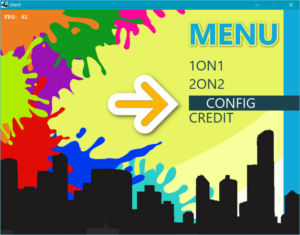
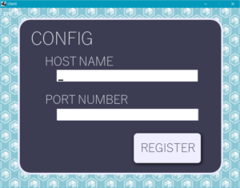
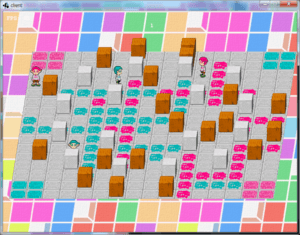
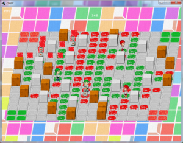
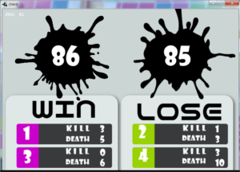

遊び方
注意
ゲームをプレイする際は、同じデータリンク内でサーバーを立て、そこに接続する必要があります
通信状況によってはラグが発生する可能性があります。ご了承ください。
アクセスすべきサーバーが存在しない場合、ゲームが停止することがあります。
はじめに
このゲームはネットワークを用いたリアルタイム対戦ゲームです。
まず、始めにconfigにてネットワークの設定してください。
メニュー > config > HOST NAME(IPアドレス), PORTNUMBER(ポート番号20000)を入力 >
Register(登録) >escキーでメニューに戻る
設定後、メニューから選択してプレイしてください。


- 1on1：1対1のランダムなネットワークリアルタイム対戦ができます(工事中)
- 2on2：2対2のランダムなネットワークリアルタイム対戦ができます
- Config：ネットワーク対戦の為の設定を行います。
- Credit：製作者のクレジットです。
対戦ルール
時間制限以内にステージ上のマスを多く爆弾で塗りつぶした方が勝利です。
爆弾は配置すると一定時間で爆発します。
爆発によって爆破範囲分ステージを塗りつぶすことができます。
爆発は一部障害物の破壊やプレイヤーを倒すことができます。
爆発には巻き込まれたら敵味方関係なくスタート地点に戻されます。
スタート地点は安全エリアであり、爆破を食らわず塗りつぶされることもありません。
障害物の影にいると爆発を避けることができます。


リザルト画面にて結果が出ます。
- KILL:自分の配置した爆弾で倒した数
- DEATH：爆破に当たった回数

上手く爆弾を配置することで、相手に勝利しましょう。
操作説明
- 十字キー：移動もしくはカーソル移動
- Shift+十字キー：方向転換
- Z：爆弾配置
- Enter：決定
- esc:メニューに戻る